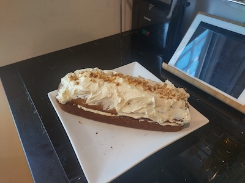

Tracey & Yona's Moist Carrot Cake

Description
Inspired by Yona's Mum, this moist carrot cake is everything you need to get your mouth watering for some delicious dessert.
This recipe comes in two parts, the cake section, and the frosting section.
Link to the original recipe: here!
Ingredients
For the carrot cake
- 2 cups (260g) all-purpose flour
- 2 teaspoons of baking soda
- 1/2 teaspoon fine sea salt
- 1.5 teaspoons ground cinnamon
- 1.25 cups (295 ml) canola or other vegetable oil
- 1 cup (200g) granulated sugar
- 1 cup (190g) lightly packed brown sugar
- 1 teaspoon vanilla extract
- 4 large eggs, at room temperature
- 3 cups (300g) grated peeled carrots, 5-6 medium carrots
- 1 cup (100g) coarsely chopped pecans (or cashews)
- 0.5 cups of raisins, preferably none
For the creamy frosting
- 8 ounces (225g) cream cheese, at room temperature
- 1.25 cups (140g) powdered sugar
- 1/3 cups (80ml) heavy whipping cream
- 1/2 cups (50g) coarsely chopped pecans, for topping the cake
Directions
Make the Batter
- Grease 2 9-inch round cake pans. Either line bottom with parchment paper, or grease and flour bottom and side of boths pans.
- Preheat oven to 176°C
- Whisk dry ingredients in small bowl until well blended.
- In a large bowl, whisk oil, granulated sugar, brown sugar and vanilla.
- Add the eggs, one at a time, whisking after each one.
- Switch to a large rubber spatula. Scrape sides and bottom of the bowl and add dry ingredients, in three parts, gently stirring until they disappear and the batter is smooth.
- Stir in the carrots, nuts and heaven forbid the raisins.
Bake Cake
- Divide the cake batter between the prepared cake pans.
- Bake until tops of cake layers are springy when touched and passes the toothpick test, approximately 35-45 minutes.
- Cool cakes in pans for 15 minutes, then carefully remove pans and leave to cool completely.
Frosting
- In a large bowl, beat the cream cheese with a handheld mixer until creamy, for 1 minute.
- Beat in the powdered sugar, 0.25 cups at a time, until fluffy.
- Pour in the whipping cream, beat for 2-3 minutes, until the frostting is whipped and creamy. Chill until cake is ready to be frosted.
- When cake layers are completely cool, frost the top of one cake layer, and place the second cake layer on top.
- Add the remaining frosting to the top of the carrot cake and use butter knife to swirl frositing around, sprinkle nuts on top.